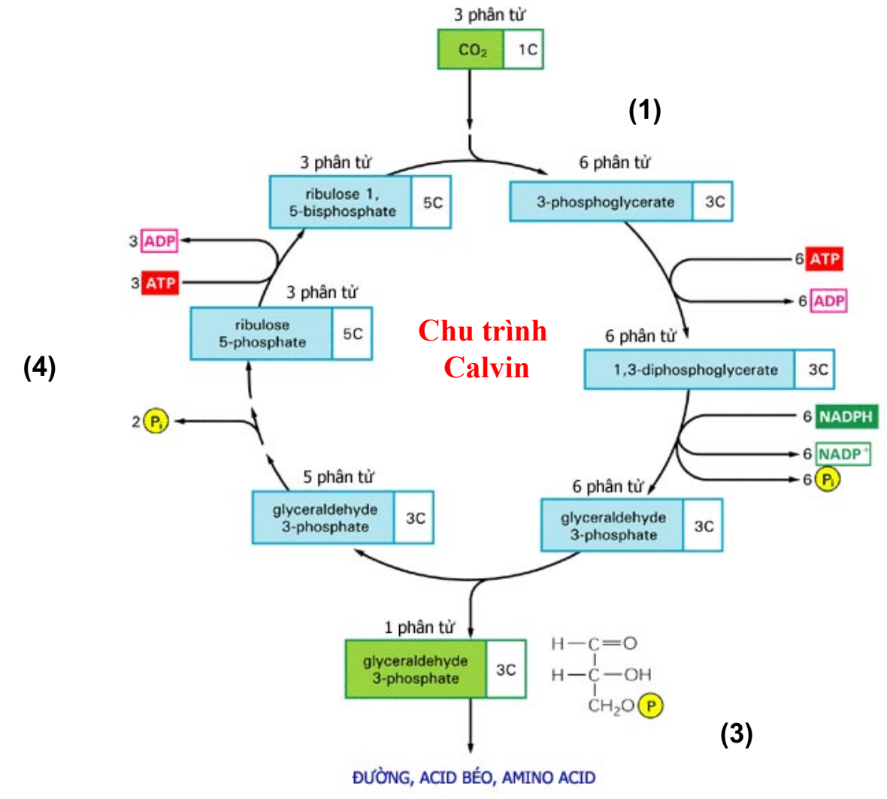

Quang hệ, chu trình Calvin và điểm bù ánh sáng
VN06 và EN06 · Quang hợp · 5 trắc nghiệm và 1 tự luận
Bắt đầu học ↓Học trọn chương và làm bộ 80 trắc nghiệm, 15 tự luận
Sau buổi này
- Phân biệt dòng electron thẳng và dòng vòng quanh quang hệ I.
- Đọc điểm bù, vùng giới hạn ánh sáng và bão hòa trong số liệu trao đổi CO₂.
- Nối nguồn O₂ và vai trò sắc tố với phản ứng sáng.
- Tách G3P rời chu trình Calvin khỏi G3P dùng tái sinh RuBP.
Gợi nhớ
Nếu cây có quang hợp nhưng CO₂ ròng bằng 0, điều đó nói gì về hô hấp? Vẽ vị trí PSII, PSI và ATP synthase.
Học kiến thức qua hình
Quan sát hình minh họa

Sơ đồ gốc ghi số phân tử ở từng nhánh và giữ đường tái sinh chất nhận CO₂.
Quan sát · Đọc các số 3, 6, 5 và 1 theo hướng mũi tên. Ghi bên cạnh mỗi nhánh có sử dụng ATP hay NADPH.
Dự đoán · Nếu cần tái tạo ba RuBP, bạn dự kiến bao nhiêu trong sáu G3P được giữ lại trong vòng?
Mở giải thích sau khi dự đoán
Ba RuBP cần 15 carbon. Năm G3P chứa 15 carbon, nên một G3P còn lại có thể rời vòng trong mô hình hạch toán ròng trên ba CO₂.
| Cường độ sáng tương đối | 0 | 20 | 40 | 80 | 120 |
|---|---|---|---|---|---|
| CO₂ ròng | −2 | 0 | 3 | 7 | 7,2 |
Dữ liệu mô phỏng. Đọc dấu âm, điểm 0 và vùng tiến tới bão hòa.
Đọc hình để tự rút ra cơ chế
Quan sát · Mức sáng 20 cho CO₂ ròng bằng 0, còn tăng từ 80 lên 120 chỉ làm tốc độ nhích nhẹ.
Dự đoán · Mức 20 có hẳn ngừng quang hợp không? Ánh sáng còn giới hạn mạnh ở 80–120 không?
Mở giải thích sau khi dự đoán
Mức 20 là điểm bù trong số liệu; đồng hóa đang cân với CO₂ giải phóng. Ở 80–120, đáp ứng nhỏ gợi ý gần bão hòa ánh sáng trong điều kiện đó.
Sắc tố và hai quang hệ
Sắc tố anten hấp thụ photon và truyền kích thích đến trung tâm phản ứng. Trong dòng thẳng của quang hợp giải phóng O₂, PSII cấp electron từ H₂O, chuỗi trung gian góp phần tạo gradient, PSI kích thích electron để tạo NADPH.
Dòng vòng quanh PSI
Electron từ PSI có thể quay về chuỗi để góp phần tạo gradient H⁺, tăng khả năng tạo ATP. Tuyến vòng quanh PSI không tạo NADPH ròng hay O₂ trực tiếp. Điều này giúp điều chỉnh tương quan ATP/NADPH phù hợp nhu cầu.
Hạch toán Calvin ở mức mô hình
Rubisco cố định 3 CO₂ lên 3 RuBP; các bước tiếp theo tạo 6 G3P. Một G3P rời vòng, 5 G3P còn lại được sắp xếp lại để tái sinh 3 RuBP. Tổng cộng dùng 9 ATP và 6 NADPH cho 1 G3P ròng với giả định bỏ qua quang hô hấp.
Đọc trao đổi CO₂ của lá
Tốc độ ròng là phần đồng hóa trừ CO₂ giải phóng bởi những quá trình được đo cùng. Điểm bù ánh sáng là mức mà trao đổi CO₂ ròng bằng 0 trong điều kiện đo. Ở vùng gần bão hòa, tăng ánh sáng ít làm tốc độ tăng; CO₂, nhiệt độ, nước hoặc một bước khác có thể trở thành giới hạn.
Liên hệ thực tế
Khi đo trao đổi khí của lá, một tốc độ ròng thấp có thể do đồng hóa thấp hoặc phần CO₂ giải phóng cao. Giữ rõ điều kiện chiếu sáng, nhiệt độ và CO₂ để so hai cây.
Cụm bài tập
Tách hai phép đo quang hợp
Lá L có dữ liệu CO₂ ròng theo ánh sáng. Hệ thylakoid T trong một bài mô phỏng khác chủ yếu dùng đường electron vòng quanh PSI.
| Ánh sáng tương đối | 0 | 20 | 40 | 80 | 120 |
|---|---|---|---|---|---|
| CO₂ ròng | −2 | 0 | 3 | 7 | 7,2 |
Đối chiếu bài làm
Chọn một chỗ còn phân vân. Giải thích lại bằng lời của mình rồi thử một câu cùng dạng.